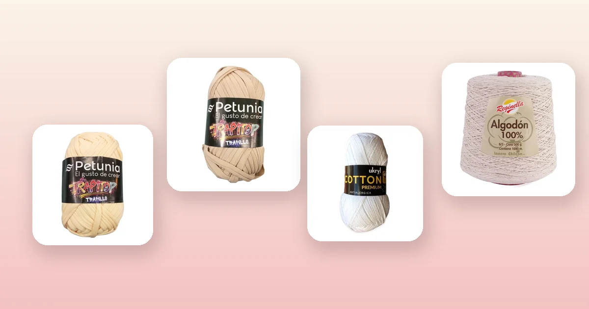

Proyectos de crochet
Cómo hacer un macetero colgante a crochet paso a paso
Los maceteros colgantes a crochet son tendencia en decoración: llenan de verde cualquier rincón sin ocupar espacio en la mesa. En esta guía te enseñamos a tejer un porta maceta con trapillo o algodón, desde la base circular hasta las cuerdas de suspensión, con medidas para distintos tamaños de maceta, los mejores materiales y todos los trucos para que soporte el peso sin deformarse.

Materiales: trapillo vs. algodón
El macetero colgante necesita un material resistente que soporte el peso de la maceta con tierra húmeda sin estirarse. Tienes dos caminos según el estilo que busques:
- Trapillo (opción rápida y gruesa): se teje en pocas horas con ganchillo de 9 mm. Da un acabado robusto y moderno, ideal para macetas medianas. Con 2 ovillos de 100 g tienes un macetero completo.
- Hilo de algodón (opción fina y elegante): se trabaja con ganchillo de 3 a 4 mm. El resultado es un macetero delicado con más detalle visual, perfecto para macetas pequeñas y suculentas.
Esto es lo que necesitas:
- Ganchillo: de 9 mm para trapillo o de 3 a 3,5 mm para algodón. Si no sabes cuál elegir, revisa la guía de qué aguja o ganchillo usar.
- Aro metálico o de madera de 8 a 10 cm de diámetro para el punto de suspensión.
- Aguja lanera para esconder las hebras.
- Tijeras y cinta métrica.
- Marcador de puntos para no perder el inicio de cada vuelta.
Los mejores materiales para este proyecto:
- Trapillo Petunia Crema: color neutro que combina con todo. 100 g y 34 m por ovillo, perfecto para maceteros estilo boho. Toda la línea en trapillo Petunia.
- Trapillo Petunia Arena: un tono cálido y natural que realza las plantas verdes. Ideal para combinar con macramé y decoración orgánica.
- Hilo de Algodón Blanco: clásico y limpio, 100 g y 200 m. Si prefieres un macetero más delicado y con más detalle. Revisa todos los colores en hilos Reginella.
- Cono de Algodón Crudo: 500 g y 1.690 m de algodón 100%. Rinde para varios maceteros y da un aspecto rústico muy lindo.
Medidas según tu maceta
Antes de empezar, mide el diámetro de la base y la altura de tu maceta. El cuenco del macetero debe abrazar la maceta hasta la mitad o dos tercios de su altura para que quede firme.
| Tamaño de maceta | Base del cuenco | Altura del cuenco | Largo cuerdas | Trapillo (ovillos) |
|---|---|---|---|---|
| Pequeña (8 – 10 cm) | 8 cm (4 vueltas) | 6 cm (4 vueltas) | 40 – 50 cm | 1 |
| Mediana (12 – 14 cm) | 12 cm (6 vueltas) | 9 cm (6 vueltas) | 50 – 60 cm | 2 |
| Grande (16 – 18 cm) | 16 cm (8 vueltas) | 12 cm (8 vueltas) | 60 – 70 cm | 3 |
Estas medidas son para trapillo con ganchillo de 9 mm. Si usas hilo de algodón con ganchillo de 3,5 mm, multiplica la cantidad de vueltas por 2,5 aproximadamente. Para calcular exactamente cuánto material necesitas, revisa la guía de cuánta lana necesito para tejer.
Paso 1: la base circular
La base es un círculo plano que sostiene el fondo de la maceta. Debe quedar firme y sin ondulaciones.
Instrucciones con trapillo (ganchillo 9 mm)
- Anillo mágico: haz un anillo mágico y teje 6 puntos bajos (pb) dentro. Cierra con punto raso. Si no dominas el anillo mágico, puedes hacer 2 cadenas y tejer 6 pb en la segunda cadena.
- Vuelta 2: 2 pb en cada punto = 12 pb.
- Vuelta 3: (1 pb, 2 pb en el siguiente) × 6 = 18 pb.
- Vuelta 4: (2 pb, 2 pb en el siguiente) × 6 = 24 pb.
- Vuelta 5: (3 pb, 2 pb en el siguiente) × 6 = 30 pb (para maceta mediana).
- Vuelta 6: (4 pb, 2 pb en el siguiente) × 6 = 36 pb (para maceta grande).
Detente cuando la base mida el mismo diámetro que el fondo de tu maceta. Pon la maceta encima para verificar: la base debe quedar plana, sin sobrar ni faltar.
Paso 2: los laterales del cuenco
Aquí el tejido deja de crecer y empieza a subir, formando las paredes que abrazan la maceta.
- Vuelta de transición: teje una vuelta completa de punto bajo tomando solo la hebra trasera del punto de abajo. Esto crea una línea marcada que separa la base del lateral y ayuda a que el cuenco se levante.
- Vueltas rectas: teje entre 4 y 8 vueltas de punto bajo sin ningún aumento, manteniendo el mismo número de puntos. Prueba la maceta cada 2 vueltas para verificar la altura.
Para una maceta mediana de 12 cm, 6 vueltas rectas en trapillo dan unos 9 cm de altura, suficiente para que la maceta quede bien sujeta.
Si quieres un patrón más elaborado en los laterales, puedes alternar vueltas de punto bajo con vueltas de punto alto para crear textura, o tejer en espiral sin cerrar las vueltas para un acabado sin costura visible.
Paso 3: cuerdas de suspensión
Las cuerdas son lo que le da el look colgante al macetero. Hay dos métodos:
Método 1: cuerdas de cadenas (fácil)
- Divide el borde superior del cuenco en 3 partes iguales (si tienes 30 pb, cada sección tiene 10 pb).
- En el primer punto de cada sección, teje una cadena de 30 a 40 eslabones (ajusta según el largo deseado). Las 3 cadenas deben medir exactamente lo mismo.
- Une las 3 cadenas con un punto raso en un mismo punto central.
- Teje 10 cadenas más desde el punto central para formar la argolla donde irá el aro.
Método 2: cuerdas trenzadas (decorativo)
- En cada punto de anclaje, teje 3 cadenas largas de 45 eslabones.
- Trenza las 3 cadenas de cada grupo.
- Une las 3 trenzas en el punto central con un nudo firme.
El método de cadenas es más rápido y limpio. El trenzado da un efecto más artesanal y resistente. Si tu maceta pesa más de 2 kg con tierra, usa el método trenzado o haz 4 cuerdas en vez de 3.
Paso 4: remate y aro para colgar
- Aro de suspensión: pasa el aro metálico o de madera por la argolla de cadenas superior. Asegúralo tejiendo puntos bajos alrededor del aro, cubriendo el metal por completo.
- Esconde las hebras: con la aguja lanera, pasa cada hebra suelta por dentro de los puntos del tejido, al menos 5 cm en cada dirección. Corta el excedente.
- Prueba de peso: antes de colgar la maceta con tierra, cuelga el macetero vacío de un gancho y ponle algo de peso (una botella de agua, por ejemplo) para verificar que las cuerdas quedan parejas y el cuenco no se deforma.
Si una cuerda queda más larga que las otras, puedes ajustarla tejiendo un punto raso más arriba o deshaciendo unos eslabones. No cortes: desteje.
Variaciones de diseño
Una vez que domines el macetero básico, puedes experimentar con estos estilos:
- Macetero calado: en los laterales, alterna 2 pb con 2 cadenas saltando 2 puntos. El efecto de red deja ver la maceta y le da un toque más liviano.
- Doble macetero: teje dos cuencos a distintas alturas conectados por las mismas cuerdas. Perfecto para un rincón con dos plantas pequeñas.
- Bordes con flecos: al terminar el cuenco, añade flecos de 10 cm en el borde inferior cortando tiras de trapillo y anudándolas punto a punto. Estilo boho garantizado.
- Macetero con granny square: en vez de un cuenco circular, teje 4 granny squares y únelos formando un cubo abierto. Un diseño retro que queda increíble con colores contrastantes.
Cuidados y mantenimiento
- Riego: pon un plato o platillo dentro del macetero, debajo de la maceta, para que el agua no escurra por el tejido. Si la maceta no tiene agujero de drenaje, aún mejor.
- Lavado: lava a mano con agua fría y jabón suave cada 2 o 3 meses. Escurre sin retorcer y cuelga para secar con la forma original.
- Sol: el algodón resiste bien la luz directa. El trapillo de poliéster puede decolorarse con exposición prolongada al sol; si tu macetero va en exterior, elige algodón. Para más consejos sobre fibras, visita la guía de cómo lavar y cuidar prendas de lana.
- Peso máximo: un macetero de trapillo bien tejido soporta hasta 3 – 4 kg. Para macetas más pesadas, usa algodón grueso (cono) tejido doble o refuerza las cuerdas con un cordón interior.
Errores comunes y cómo evitarlos
- El cuenco no sube: olvidaste dejar de aumentar. Después de la base plana, teje sin aumentos. Si ya llevas varias vueltas, desteje hasta donde empezaron los laterales.
- Cuerdas desparejas: cuenta los eslabones de cadena de cada cuerda antes de unirlas. Usa una regla para verificar que midan lo mismo.
- El macetero se estira y baja: la tensión es muy floja o el ganchillo es demasiado grande. Desteje y usa un ganchillo un número menor.
- La maceta se sale: el cuenco es demasiado ancho o bajo. Teje más vueltas en los laterales para que abrace mejor la maceta, o teje la última vuelta del borde con un ganchillo más chico para apretar la abertura.
- El aro se desliza: teje puntos bajos alrededor del aro cubriéndolo por completo en vez de simplemente pasar las cadenas por dentro.
Preguntas frecuentes
¿Qué material es mejor para un macetero colgante a crochet?
El trapillo es ideal porque es grueso, resistente y soporta el peso de la maceta con tierra. El algodón 100% también funciona muy bien si prefieres un acabado más fino y delicado. Evita la lana acrílica porque se estira con el peso y no resiste la humedad.
¿Cuánto trapillo necesito para un macetero colgante?
Para un macetero básico de maceta mediana (12 – 14 cm) necesitas 2 ovillos de trapillo de 100 g (34 m cada uno). Para una maceta grande o un diseño con flecos, calcula 3 ovillos. Si usas hilo de algodón, 1 ovillo de 200 m alcanza para un macetero pequeño.
¿Qué tamaño de maceta cabe en un macetero colgante a crochet?
El patrón básico de esta guía cubre macetas de 10 a 14 cm de diámetro. Ajusta sumando o restando vueltas en la base y modificando la cantidad de cadenas en las cuerdas para macetas más grandes o más chicas.
¿Cómo evitar que el macetero se deforme con el peso?
Usa un ganchillo 1 o 2 números más chico que el recomendado en la etiqueta del hilo. Teje con tensión pareja y, si usas algodón, bloquea el macetero en húmedo antes de colgar la maceta. Refuerza las cuerdas si la maceta pesa más de 2 kg.
¿Se puede lavar un macetero colgante tejido a crochet?
Sí. Los maceteros de trapillo o algodón se lavan a mano con agua fría y jabón suave. Escurre sin retorcer y déjalo secar colgado para que mantenga la forma. No uses secadora ni lo dejes remojando por mucho tiempo.